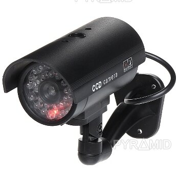

Welcome to vaizdo-kameros
vkameros.lt - apsaugos, stebėjimo vaizdo kameros
2020.10.27 11:24+370 636 26238 [email protected] NEMOKAMAS PRISTATYMAS Prisijungti / Registruotis 0 Prekių palyginimas 0 / 0.00 € Meniu 0 / 0.00 € Vaizdo kameros Dahua Hikvision Visar Įrašymo įrenginiai Dahua Hikvision Visar Telefonspynės Dahua Hikvision Praėjimo kontrolės Dahua Hikvision Gaisro sistemos NUOLAIDOS SPECIALŪS PASIŪLYMAI
Siūlome platų Dahua, Visar, Hikvision
gamintojų įrangos asortimentą
palankiausiomis kainomis IŠSIRINK!
Aukšta kokybė
Mes siūlome aukščiausios kokybės gamintojų, apsaugos prekes
Nemokamas pristatymas
Prekės pristatomos per 24 valandas, siunčiame kiekvieną dieną
Patogus atsiskaitymas
Puslapyje integruoti patogūs apmokėjimo būdai, kad palengvinti atsiskaitymą
POPULIARIAUSI PRODUKTAI
Prekių palyginimas Greita peržiūra UždarytiDAHUA HAC-HDW1400EM-A-0280B, 4MP HDCVI IR EYEBALL KAMERA
62.99 € su PVM Į krepšelį Prekių palyginimas Greita peržiūra UždarytiVisar IP kamera VSC-IPT4VDS3F28 4MP, su integruotu mikrofonu
81.00 € su PVM Į krepšelį Prekių palyginimas Greita peržiūra UždarytiVisar IP kamera VSC-IPT5VDS3AF28D 5MP, su integruotu mikrofonu
90.99 € su PVM Į krepšelį Prekių palyginimas Greita peržiūra UždarytiDAHUA HAC-HDW1230EM-A-0280B KAMERA HD-CVI 2MP IR 50M SMART IR
93.00 € su PVM Į krepšelį Prekių palyginimas Greita peržiūra UždarytiHikvision IP kamera DS-2CD1043G0-I 4.0 MP, 2.8 mm, H.265+
101.00 € su PVM Į krepšelį Prekių palyginimas Greita peržiūra UždarytiHikvision IP kamera DS-2CD2183G0-I-black 8 MP(4K), 2.8/4/6/8mm
175.99 € su PVM Į krepšelį Prekių palyginimas Greita peržiūra UždarytiDAHUA IP KAMERA IPC-HDW2531R-ZS, 5MP, 2.7-13,5mm, 128 GB
196.99 € su PVM Į krepšelį Prekių palyginimas Greita peržiūra UždarytiDAHUA IP KAMERA IPC-HFW4631E-SE-0280B, 6MP, 2.8mm, H.265
337.99 € su PVM Į krepšelį Prekių palyginimas Greita peržiūra UždarytiDAHUA IP KAMERA IPC-HFW1531S-0360B, NET 5MP IR BULLET, 3.6mm
359.01 € su PVM Į krepšelį Prekių palyginimas Greita peržiūra UždarytiDAHUA IP KAMERA IPC-HDBW5631R-ZE, 6MP, 2.7-13,5mm, 128GB
386.00 € su PVM Į krepšelį POPULIARIAUSI PASIŪLYMAI Vaizdos kameros Vaizdos kameros Įrašymo įrenginiai Telefonspynės Praėjimo kontrolės Prekių palyginimas Greita peržiūra UždarytiDAHUA HAC-HDW1400EM-A-0280B, 4MP HDCVI IR EYEBALL KAMERA
62.99 € su PVM Į krepšelį Prekių palyginimas Greita peržiūra UždarytiVisar IP kamera VSC-IPT4VDS3F28 4MP, su integruotu mikrofonu
81.00 € su PVM Į krepšelį Prekių palyginimas Greita peržiūra UždarytiVisar IP kamera VSC-IPT5VDS3AF28D 5MP, su integruotu mikrofonu
90.99 € su PVM Į krepšelį Prekių palyginimas Greita peržiūra UždarytiDAHUA HAC-HDW1230EM-A-0280B KAMERA HD-CVI 2MP IR 50M SMART IR
93.00 € su PVM Į krepšelį Prekių palyginimas Greita peržiūra UždarytiHikvision IP kamera DS-2CD1043G0-I 4.0 MP, 2.8 mm, H.265+
101.00 € su PVM Į krepšelį Prekių palyginimas Greita peržiūra UždarytiHikvision IP kamera DS-2CD2183G0-I-black 8 MP(4K), 2.8/4/6/8mm
175.99 € su PVM Į krepšelį Prekių palyginimas Greita peržiūra UždarytiDAHUA IP KAMERA IPC-HDW2531R-ZS, 5MP, 2.7-13,5mm, 128 GB
196.99 € su PVM Į krepšelį Prekių palyginimas Greita peržiūra UždarytiDAHUA IP KAMERA IPC-HFW4631E-SE-0280B, 6MP, 2.8mm, H.265
337.99 € su PVM Į krepšelį Prekių palyginimas Greita peržiūra UždarytiDAHUA IP KAMERA IPC-HFW1531S-0360B, NET 5MP IR BULLET, 3.6mm
359.01 € su PVM Į krepšelį Prekių palyginimas Greita peržiūra UždarytiDAHUA IP KAMERA IPC-HDBW5631R-ZE, 6MP, 2.7-13,5mm, 128GB
386.00 € su PVM Į krepšelįTELEFONSPYNĖS
VAIZDO KAMEROS
GAISRO SISTEMOS
TELEFONSPYNĖS
VAIZDO KAMEROS
GAISRO SISTEMOS
YPATINGI PASIŪLYMAI
Prekių palyginimas Greita peržiūra UždarytiVisar IP kamera VSC-IPT5VDE2AMZ 5MP, motorizuotu objektyvu
230.00 € su PVM Į krepšelį Prekių palyginimas Greita peržiūra UždarytiHikvision IP kamera DS-2CD2045FWD-I-black 4 MP, 2.8mm, IP67
236.00 € su PVM Į krepšelį Prekių palyginimas Greita peržiūra UždarytiVisar IP kamera VSC-IPT5VDS2MZ 4MP, su motorizuotu objektyvu
242.00 € su PVM Į krepšelį Prekių palyginimas Greita peržiūra UždarytiHikvision IP kamera DS-2CD2T45FWD-I8-black 4 MP, 2.8-12 mm
300.00 € su PVM Į krepšelį YPATINGI PASIŪLYMAI Vaizdos kameros Vaizdos kameros Įrašymo įrenginiai Telefonspynės Praėjimo kontrolės Prekių palyginimas Greita peržiūra UždarytiVisar IP kamera VSC-IPT5VDE2AMZ 5MP, motorizuotu objektyvu
230.00 € su PVM Į krepšelį Prekių palyginimas Greita peržiūra UždarytiHikvision IP kamera DS-2CD2045FWD-I-black 4 MP, 2.8mm, IP67
236.00 € su PVM Į krepšelį Prekių palyginimas Greita peržiūra UždarytiVisar IP kamera VSC-IPT5VDS2MZ 4MP, su motorizuotu objektyvu
242.00 € su PVM Į krepšelį Prekių palyginimas Greita peržiūra UždarytiHikvision IP kamera DS-2CD2T45FWD-I8-black 4 MP, 2.8-12 mm
300.00 € su PVM Į krepšelįMES TURIME DIDELĮ PREKIŲ ASORTIMENTĄ!
IŠSIRINKITE PREKESPASKUTINĖS NAUJIENOS
10 RgsKameros sistemų privalumai namuose
10 RgsKaip saugumo kameros gali apsaugoti jūsų automobilio plovimą?
10 Rgs4 puikios priežastys įdiegti saugos kameras jūsų versle
MŪSŲ VEIKLOS TIKSLAS
Mūsų veiklos tikslas ne tik pasiūlyti plačiausią Hikvision ir Dahua įrangos asortimentą Lietuvoje geromis kainomis, bet pasiūlyti Jums tinkamiausias prekes, pagal Jūsų asmeninius poreikius, kokybės ir finansų atžvilgiu. Jei dvejojate plačioje pasiūloje pasirenkant konkrečią prekę, prieš tai pasikonsultuokite su mumis.
Vaizdo kameros Įrašymo įrenginiai Telefonspynės Praėjimo kontrolės Gaisro sistemos PriedaiKODĖL VERTA RINKTIS MUS?
Aukšta prekių kokybė
Mes tiekiame aukštos kokybės prekes tiesiai iš gamintojų jau daugiau nei 4 metus, todėl galime pasiūlyti geriausias kainas ir didelį asortimentą savo klientams.
Patrauklios kainos
Visada norime, kad klientai rinktųsi mus ne tik dėl aukštos prekių kokybės, bet ir dėl patrauklios kainos, todėl visada stengėmės pasiūlyti ją mažiausią rinkoje.
Patogus atsiskaitymas
Šioje svetainėje yra integruota „Paysera“ elektroninė apmokėjimo sistema. Jūs galėsite atsiskaitytį už prekes įvairiais Lietuvos bankais.
Malonus bendravimas
Mūsų konsultantai visada jums patars, kur įsigyti reikiamą prekę, suteiks visą turimą informaciją, padės išspręsti visas jums iškilusias problemas.
Patikimumas
Mes, kaip ir kiekviena įmonė rūpinamės savo klientais, kurie garsina mūsų vardą, todėl pasitikėjimas yra vienas iš svarbiausių kriterijų dirbant pardavimų srityje.
Nemokamas pristatymas
Mes pristatome paštomatu arba kurjerių, kur Jums patogiau, visiškai nemokamai!
KONTAKTAI
Tel. nr. +3706 3626 238
El. paštas: [email protected]
UAB „IDELA“
Įm.kodas: 304960207
PVM mok. kodas: LT100012051619
Ukrainiečių g. 4, LT-45234
KLIENTAMS
Apie mus Naujienos D.U.K Kontaktai Mano paskyraNAUDINGA INFORMACIJA
Atsiskaitymas ir pristatymas
Už perkamas prekes atsiskaitoma Paysera.lt integruota sistema (jūs būsite nukreipti į savo naudojamą Lietuvos banką ir iškarto galėsite atlikti atsiskaitymą už prekes). Prekės yra siunčiamos per Omniva kurjerių pristatymo tarnybą.
Grąžinimo sąlygos
Jei prekę ar paslaugą įsigijote internete, turite teisę nutraukti sandorį ir grąžinti užsakymą per 14 dienų.
Kontaktai
[email protected]
+370 636 26238
Darbo laikas:
I-V 08:00 - 18:00
VI 10:00 - 16:00
TOP 3 PREKĖS
DAHUA HAC-HFW1200S-0280B HDCVI 1080P IR BULLET KAMERA 52.01 € su PVM DAHUA IPC-HDW4431EM-ASE-0360B NET KAMERA 4MP IR EYEBALL 211.99 € su PVM DAHUA HAC-HDW1400EM-A-0280B, 4MP HDCVI IR EYEBALL KAMERA 62.99 € su PVM Prekės 0 Prekių palyginimas 0 KrepšelisPirkinių krepšelis
uždaryti Meniu Kategorijos Vaizdo kameros Dahua Hikvision Visar Įrašymo įrenginiai Dahua Hikvision Visar Telefonspynės Dahua Hikvision Praėjimo kontrolės Dahua Hikvision Gaisro sistemos Pagrindinis Apie mus Parduotuvė Kontaktai Naujienos Prekių palyginimas Prisijungti / RegistruotisPrisijungti
uždaryti Dar neturi paskyros? Registruotis Scroll To Top Šioje svetainėje naudojami slapukai (angl. cookies). Sutikdami, paspauskite mygtuką „Sutinku“. Savo duotą sutikimą bet kada galėsite atšaukti pakeisdami savo interneto naršyklės nustatymus ir ištrindami įrašytus slapukus. Sutinku